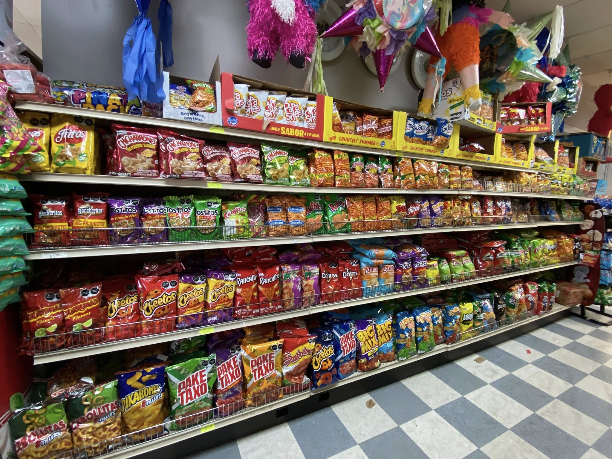
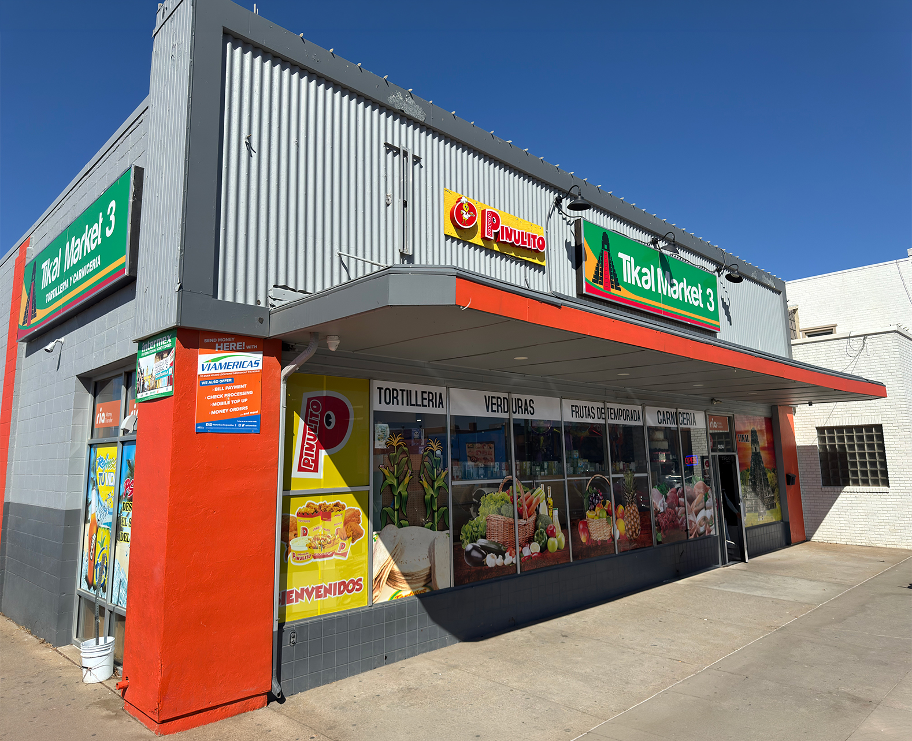
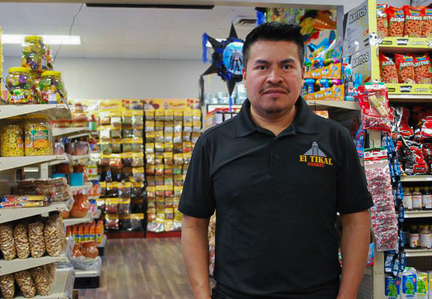
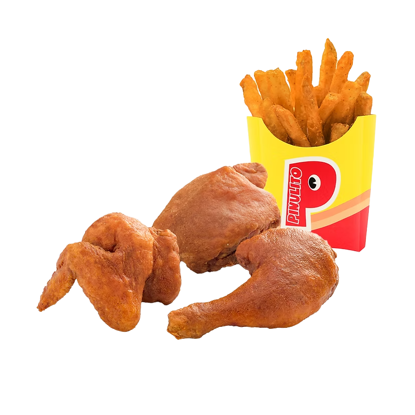
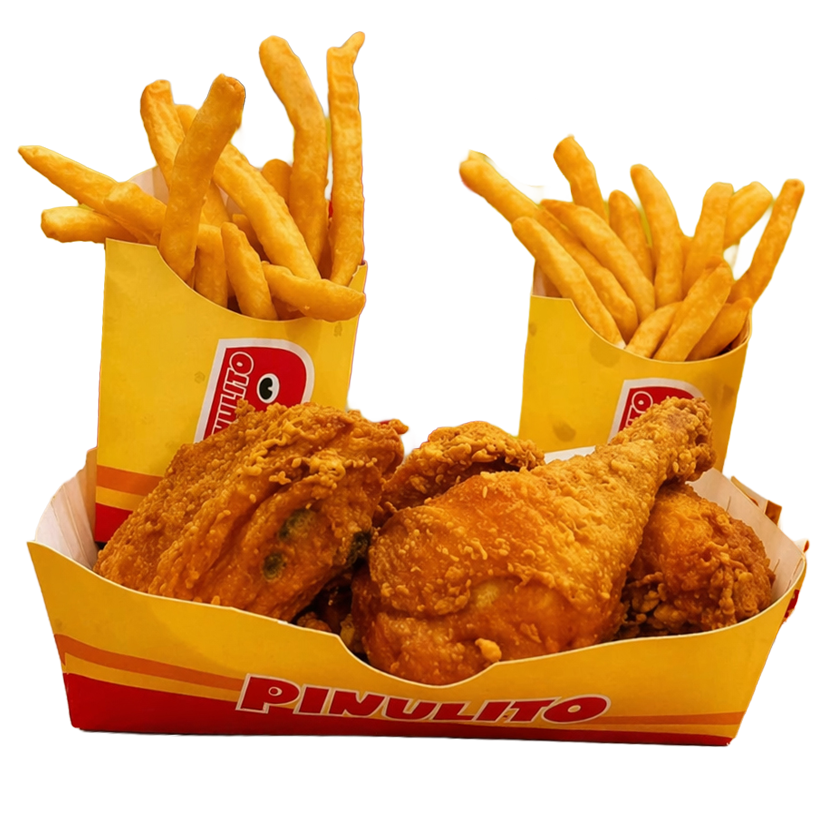

Calidad
Cada visita manda en la vitrina: traemos sabor, color y productos frescos con los que de veras cocinas.

Sobre
En Tikal Market, como supermercado latino, llevamos a la mesa lo mejor de Guatemala, México y Centroamérica, con el cariño de quien sabe de verdad.
Desde 2001 trabajamos para ofrecer productos frescos y auténticos y un trato de familia, en Omaha, en Fremont, en Schuyler y en nuestras tiendas a lo largo de Nebraska. Si necesitas hablar, comunícate con nosotros por el medio que te venga bien.
Cuidamos lo simple: productos frescos, atención cercana y un supermercado latino hecho para el día a día de la comunidad latina en Nebraska, desde Omaha y Fremont hasta Schuyler.
Cada visita manda en la vitrina: traemos sabor, color y productos frescos con los que de veras cocinas.
Tratamos a quien pasa el carrito en Omaha, en Fremont o en Schuyler como gente de casa, con respeto y cercanía.
Lo que pasa por caja huele a Guatemala, a México y a Centroamérica, con sabor a lo que tú recuerdas.
Buscamos que llenar la bolsa en nuestro supermercado latino sea fácil, claro y sin vueltas, para el ritmo de Nebraska.

Tikal Market nació con el sueño de un lugar donde la comunidad encontrara productos auténticos y accesibles, con un servicio cálido y cercano.
Gracias a quienes nos eligen, hoy tenemos varias ubicaciones en Omaha, en Fremont y en Schuyler, Nebraska, y seguimos creciendo de la mano de la gente que pasa por el mostrador.
En Tikal Market
creemos en retribuir a la comunidad
que nos ha apoyado durante tantos años.
Nos enorgullece ser parte de Omaha, de Fremont y de Schuyler,
crear conexiones, apoyar lo local
y llevar a la mesa lo que une familias, con comida preparada como
Pollo Pinulito en
nuestras tiendas que lo preparan, según anuncia cada local.



Todo lo que necesitas
Seguimos trabajando cada día para llevarte lo mejor.
Nuestras tiendas
Tikal Market es una red de supermercados latinos en Nebraska: abarrotes, productos frescos, carnicería, pan, tortillería, comida preparada y otras secciones según la sucursal, con raíces y sabor asociados a Guatemala y a la comunidad latina en el estado.
Tikal Market atiende en Omaha, en Fremont y en Schuyler, Nebraska. Mira nuestras tiendas para mapas, horarios y el detalle de cada lugar. Si escribes con una duda, comunícate con nosotros y te guiamos.
Reunimos en un mismo pasillo productos y marcas de Guatemala, de México y de Centroamérica, con atención cercana y con lo que pida cada comal, vitrina o mostrador, según el día y el lugar, sin dejar de ser un negocio de barrio para quien vive cerca.